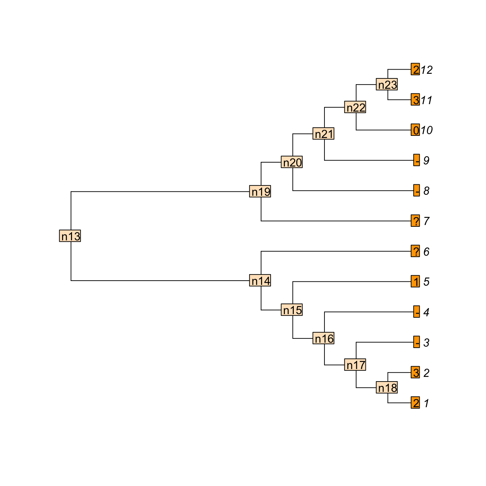
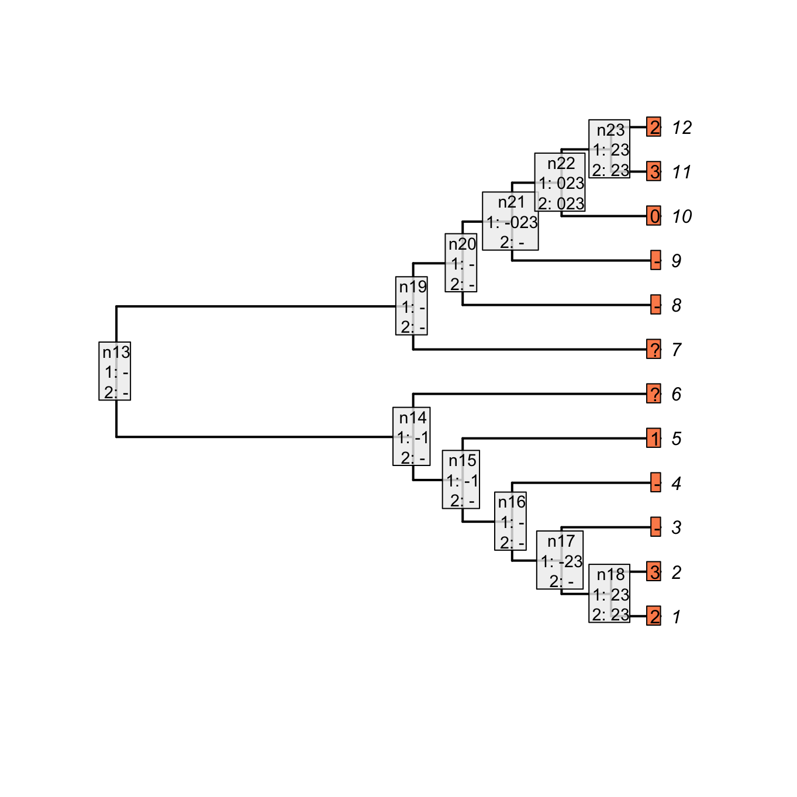
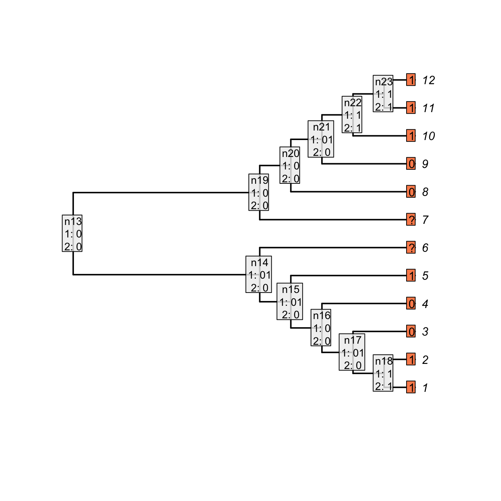
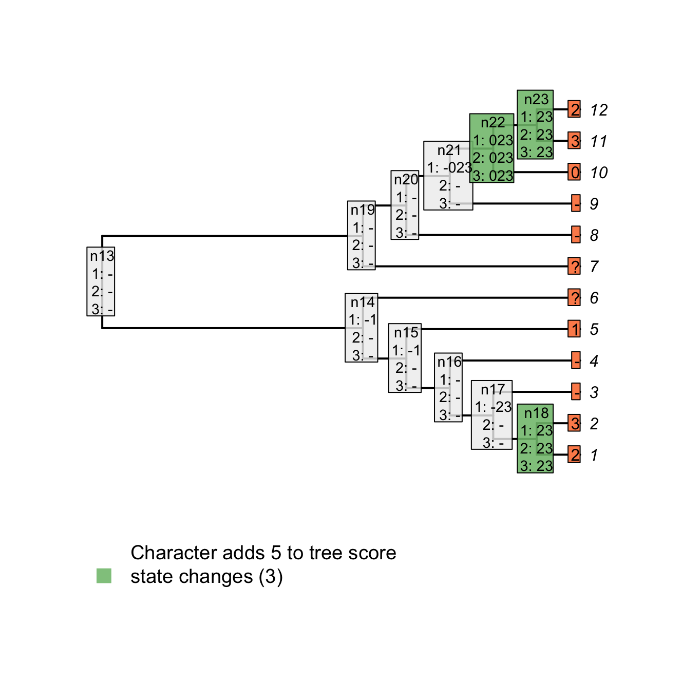
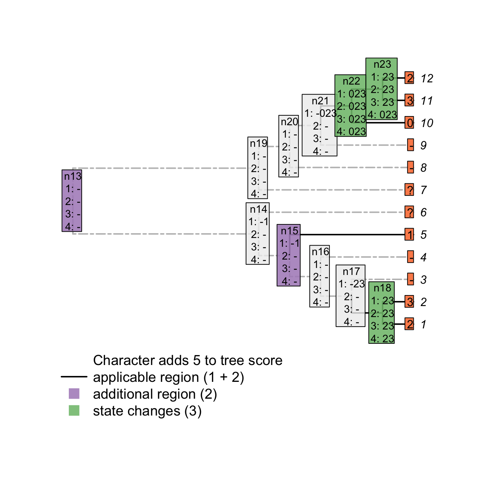

4 Implementation
Consider a tree with 12 taxa and the following multi-state characters with inapplicable data 23--1??--032; say the character is “colour of the tail” ranging from 0 to 3 (four colours).
Four taxa in our example have no tail (hence the inapplicable data -) and for two taxa, the data is missing (?- we don’t known the colour of the tail or even whether the taxa have a tail or not).

We can use the Inapp package to apply our four passes inapplicable algorithm for this character on this tree.
## Loading the Inapp package
library(Inapp)
## The tree
tree <- read.tree(text = "((((((1,2),3),4),5),6),(7,(8,(9,(10,(11,12))))));")
## The character
character <- "23--1??--032"
## Applying the NA algorithm
matrix <- apply.reconstruction(tree, character, method = "NA", passes = 4)Here is what is happening:
4.1 Passes 1 & 2
The first two passes are a standard Fitch algorithm applied the the parent character of the studied character (see [Fitch.Rmd]) with a special rule for the inapplicable state (-).
For the first pass (first downpass):
- If state in common between the two descendants is the inapplicable state, but that both have also applicable states, set the node’s state to be the union between the descendants states (rather than their state in common).
- If there is no state in common between the descendants and both descendants have applicable states, remove the inapplicable state from their union (rather than simply setting the nodal state to their union).
For the second pass (first uppass):
- If the focal node has both applicable and inapplicable states, set it to be the inapplicable state only if its ancestor has also only the inapplicable state, else remove the inapplicable state.
- If the focal node has only an inapplicable state and it’s ancestor has not only the inapplicable state, set it to be the union between it’s descendants states if their are both applicable, else, leave it as the inapplicable state.
## Plotting the NA two first passes
plot(matrix, passes = c(1,2), counts = 0, main = "Inapplicable reconstruction")
The parent character can be considered as a binary character “presence (1) or absence (0) of a tail” that would be 11001??00111.
The character would be reconstructed as:
## The parent character
parent_character <- "11001??00111"
## Applying the Fitch algorithm
matrix_parent <- apply.reconstruction(tree, parent_character, method = "Fitch", passes = 2)
plot(matrix_parent, passes = c(1,2), counts = 0, main = "Fitch reconstruction of the parent character")
As you can see, both reconstructions are identical: nodes with no tail are denoted as 0 in the case of the “parent character” and as - for our current character.
Note however that contrary to the Fitch algorithm, there is no tree score counting in our algorithm for the two first passes.
Indeed, in the case of the Fitch reconstruction of the “parent character”, the gain or losses of a tail are counted but not the changes in states for the subtending character (the tree score is 3 in Fitch, 5 in our case).
4.2 Pass 3
The third pass further resolves ambiguities at nodal states. If the node is applicable, the standard Fitch downpass comparisons between the descendants are applied (see [Fitch.Rmd]) but with the rules relative to the inapplicable state described for the first downpass above.
During this pass, we can also count the tree score. This score is composed of both:
- the change in states (e.g. the change in the colour of the tail)
- the change between applicable and inapplicable regions (e.g. the change in the parent character: a gain or a loss of the tail)
The changes of states are calculated the same way as Fitch for the applicable states only:
- If there is no state in common between both node’s descendants and that the node and its descendant have a least one applicable state, increment the tree score.
## Plotting the NA two first passes
plot(matrix, passes = c(1,2,3), counts = 2, main = "State changes", show.labels = c(1,2))
For example, for node n23, there is no state in common between the tip 12 (2) and 11 (3), the tree score is incremented at this node (case 1 above).
Note, however, that for node n21, there is no state in common between node n22 (023) and tip 9 (-) but the score is not incremented since it does not concern applicable states only.
In other words, there is no change in state at the node n21 from the tail having a colour 0, 2 or 3 to the tail not being present (-) but rather a change in the parent character between presence and absence of the tail (present is 023 and absent is -).
4.2.1 Tracking applicable regions
To know whether any node leads to a region of applicable states we can use a “tracker” for each node that tells us at any moment whether descendants of a node contain applicable data or not. Doing so, we can know, when a node is inapplicable and its descendant lead to applicable regions that extra applicable regions are implied by the tree. In other words and following our “colour of the tail” character, extra applicable regions imply independent appearances of the tail somewhere in the node’s descendants.
The tracker is initialised during the second pass (first uppass) and is updated during the third pass (second downpass). The tracker works as follows for each node’s left and right descendants:
- If the descendant state was resolved as applicable, the node leads to an applicable region, else, it leads to an inapplicable one.
The trackers are initialised for each node during the first uppass and then propagated back down the tree during the second downpass.
Using these trackers, we can then increments the tree score for all changes that imply a new applicable region. The switch to or from an inapplicable and applicable region are counted as follow:
- If the node is inapplicable and both descendants lead to regions of applicable states, increment the region count.
## Plotting the NA two first passes
plot(matrix, passes = c(1,2,3), counts = 1, main = "Applicable regions", show.labels = c(1,2))
For example, node n15 is solved as inapplicable but both his descendants lead to two independent applicable regions (tip 5 with the state 1 and node n18 with the states 1 and 2).
This implies an independent change in the parent character (in our example, tail is absent at node n15 but evolves independently at tip 5 and node n18).
Conversely, node n21 is solved as inapplicable but not both his descendants lead to independent applicable regions.
This node does thus not imply an independent change in the parent character.
Note that the number of applicable regions for a character is always at least 1 (unless every taxa has the inapplicable state) and therefore, we only count the additional regions.
Combining both scores - the number of changes in character states and the number of additional applicable regions - we get indeed a total tree score of 5 for this tree and character
## Plotting the NA two first passes
plot(matrix, passes = c(1,2,3), counts = c(1,2), show.labels = c(1,2))
Using these tree passes is enough to get the tree score (while taking into account inapplicable data!) but does not solve all ancestral reconstructions. A fourth pass (second uppass) might be necessary to finalise the node states reconstructions.
4.3 Pass 4
In the example above, the node n23 is still not correctly solved after the third pass.
In fact, considering its ancestor’s states (023) and its descendants’ states (2 and 3), it should be resolved as 023 under a delayed transition model (DELTRAN).
In order to do so, we can apply a extra pass similar to the second pass (first uppass), as described above.
## Plotting the NA two first passes
plot(matrix, passes = c(1,2,3,4), counts = c(1,2), show.labels = c(1,2))
4.4 Software implementation
This algorithm has been implemented in two R packages. Inapp provides an interactive
visualization of how the score of a user-specified tree is calculated for any
character under different approaches to inapplicable data.
This package was used to generate many of the figures in this document.
TreeSearch allows for parsimony tree
searches with the inapplicable algorithm (Brazeau, Guillerme, & Smith, 2017).
It includes heuristic search options that make it possible to search reasonable-sized matrices, and includes an option for equal or implied weighting.
TreeSearch is a front-end to the morphylib
C library, which will eventually implemented in the standalone Morphy program for rapid phylogenetic searches.
References
Brazeau, M. D., Guillerme, T., & Smith, M. R. (2017). Morphological phylogenetic analysis with inapplicable data. bioR\(\chi\)iv. doi:10.1101/209775